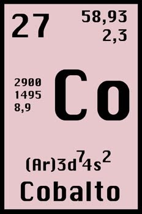

COBALTO:

El cobalto es un metal duro, ferromagnético, de color blanco azulado. Su temperatura de Curie es de 1388 K. Normalmente se encuentra junto con níquel, y ambos suelen formar parte de los meteoritos de hierro. Es un elemento químico esencial para los mamíferos en pequeñas cantidades. El Co-60, un radioisótopo de cobalto, es un importante trazador y agente en el tratamiento del cáncer.
 Ir a página principal
Ir a página principal